Case study 05 · Mobile app · Personal project
From browse to booked. A faster, friendlier cinema ticketing experience.
In 30 seconds
- The problem: Moviegoers never know when the interval ends, and they miss films because nobody tells them when shows leave theatres.
- What I did: Designed CinePass, a ticketing app for a local theatre, with interval timers and show removal alerts. Interviewed 5 people, tested with 5 more, iterated.
- The result: A complete, user-tested app design that fixes two problems the big platforms ignore.
The starting point
I love going to the movies, and two things kept ruining it. I never knew when the interval would end, so snack runs became a gamble. And films kept disappearing from theatres before I got around to watching them, with no warning at all.
CinePass is a ticket booking app I designed for a theatre near my hometown, where the crowd is passionate about films. It fixes those two problems directly: clear interval notifications and alerts before a show leaves the theatre.
Checking my assumptions
Before designing anything, I interviewed five people: two theatre enthusiasts and three casual viewers. I wanted to know whether my frustrations were mine alone or shared. They were shared. Most participants had faced the same two problems, which validated the idea.
The questions covered how they book, what influences their decision to go, whether they had missed interval endings or removal dates, and what would improve their experience.
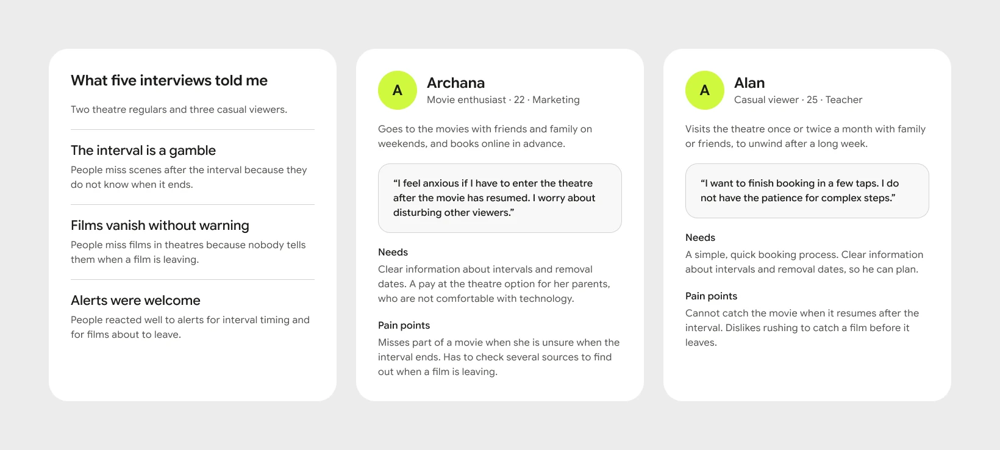
Learning from the competition
I analysed BookMyShow and PVR Cinemas, the two biggest ticketing platforms in India. Both handle booking well. Neither tells you when the interval ends or warns you before a film leaves theatres. That gap became the core of CinePass.
The questions that guided the design
- How might we help people plan their theatre visit with accurate interval and showtime information?
- How might we make buying a ticket faster and less frustrating?
- How might we make the app easy for everyone, including people who are not comfortable with technology?
Testing with real users
I built wireframes, then took the high-fidelity designs to five participants for usability testing. Three clear findings came back:
- Seat selection: people were confused about where the screen was relative to the seats.
- Finding films: people wanted search and filters on the homepage.
- Unclear wording: the label "few more days left" did not clearly say the film was about to leave.
I fixed all three: a clearer screen indicator on the seat map, search and filter options on the homepage, and plain wording for removal dates.
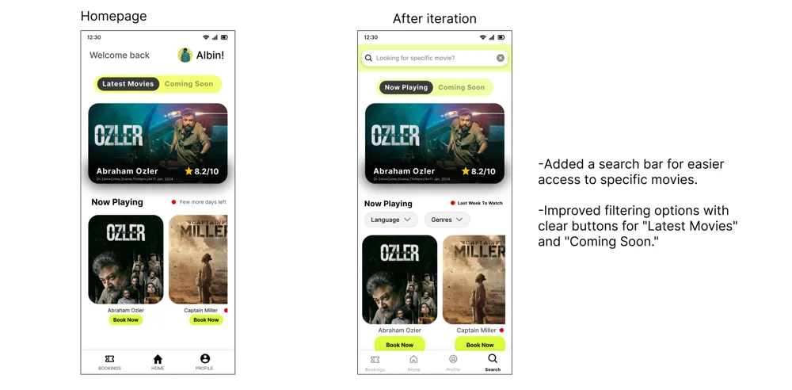
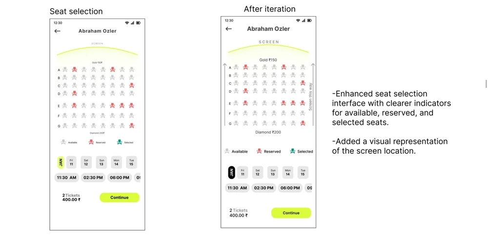
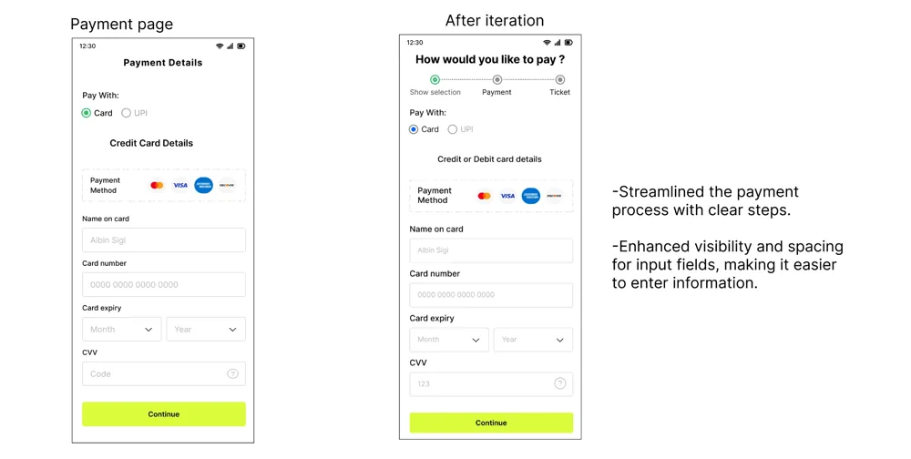
The 2024 design
A minimalist booking flow with the two signature features built in: an interval timer notification during screenings, and alerts when a film you want to see is about to leave the theatre.
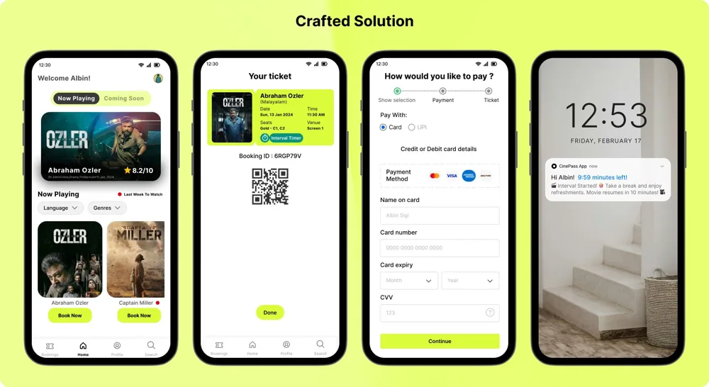
The 2026 refresh
This was my first project. Two years later I went back and redesigned the interface with what I know now. The research and the two core ideas stay the same. Almost everything else changed.
Here are three screens side by side, with the reason behind each change.
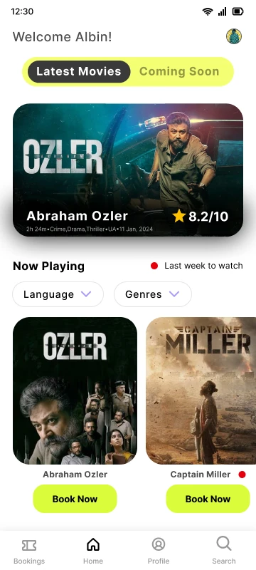
2024. A featured film and a poster row, like any ticketing app.
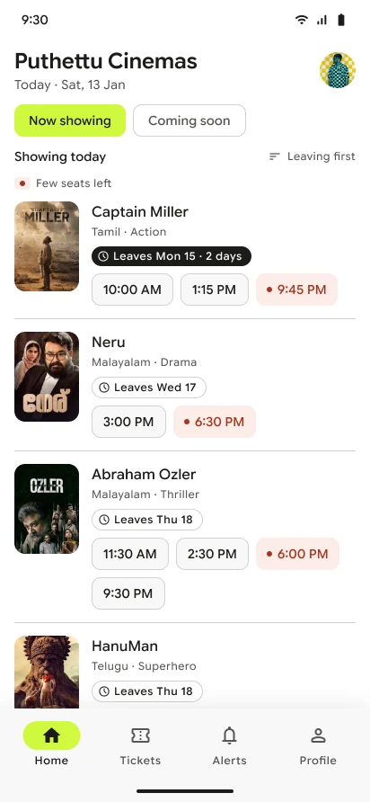
2026.
- 1The theatre name leads. This app is for one theatre, so there is no search and no city picker.
- 2Every film shows its last day. The film closest to leaving gets the strongest tag, and the list is sorted that way.
- 3Showtimes sit on the first screen, so booking starts with one tap.
- 4Soft red marks a show with few seats left. Nothing else on the list is coloured.
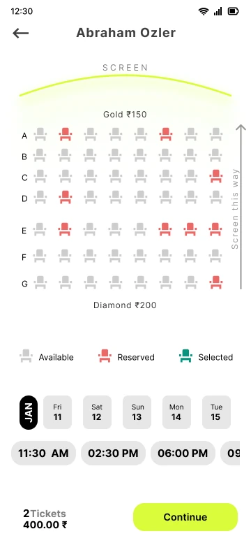
2024. Small seat icons, with red for reserved and colour as the only cue.
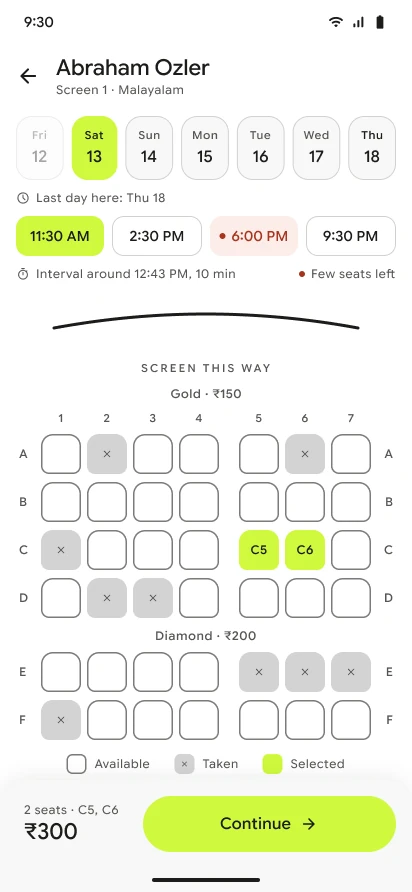
2026.
- 1The last day is called out next to the dates.
- 2You see the interval time before you choose a show.
- 3Columns are numbered, and taken seats carry an x, so colour is never the only cue.
- 4Seats are bigger, and a picked seat shows its own number.
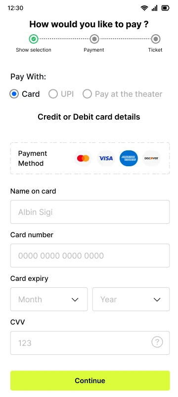
2024. A card form first, with UPI as a small option.
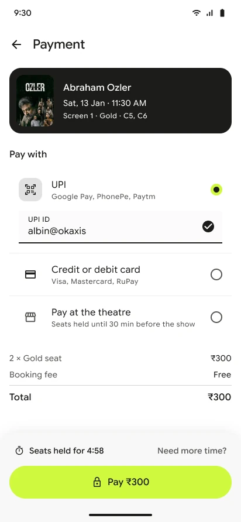
2026.
- 1The booking stays in view while you pay.
- 2UPI comes first, with one field to fill.
- 3Pay at the theatre is there for people who prefer cash.
- 4The seat hold timer sits next to the pay button, with a way to ask for more time.
- One theatre, one schedule: home is today's showtimes, sorted by which film leaves first. No search bar and no city picker, because there is only one theatre.
- Leaving soon on every film: each film shows its last day. The one closest to leaving gets the strongest tag.
- The interval shows up early: you see the interval time before you pick a seat, and a live countdown during the show.
- Lime means two things: what you selected, and the one main action on the screen. Everything else is white, near-white or charcoal.
- Seats you can tap: bigger seats, numbered columns, and each state has a shape as well as a colour.
- UPI first: with a pay at the theatre option for people who are not comfortable paying online.
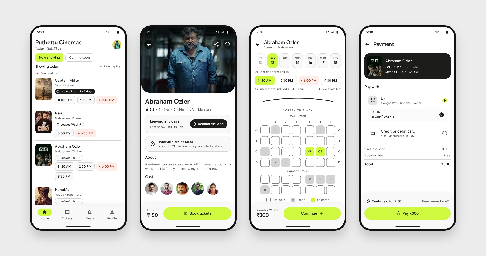
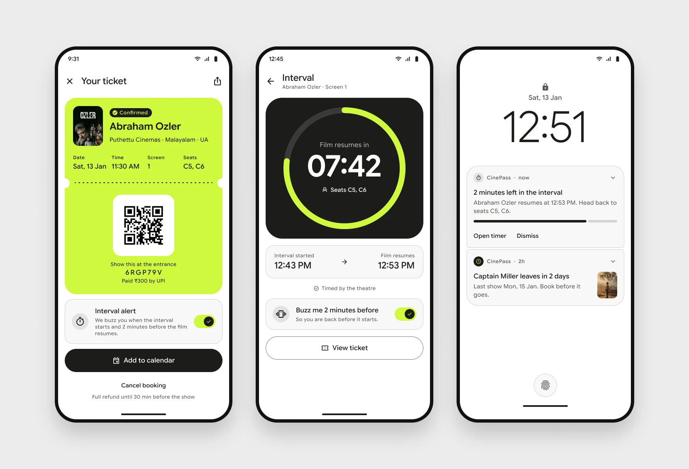
I also designed the moments that usually get skipped: home while the interval is running, a seat taken by someone else while you choose, a payment that fails, and the timer after the film has resumed.
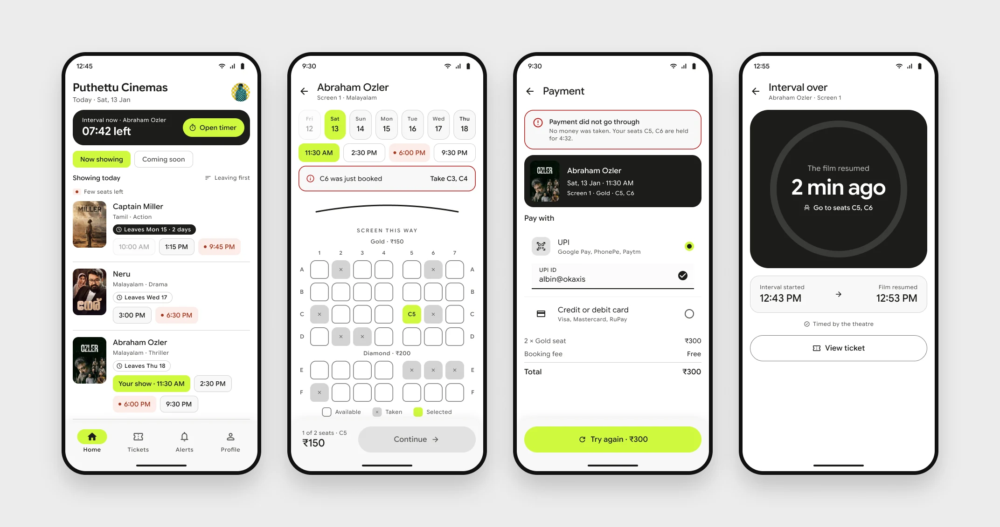
Dark mode uses the same colour tokens. It matters more than usual here, because people open this app inside a dark hall.
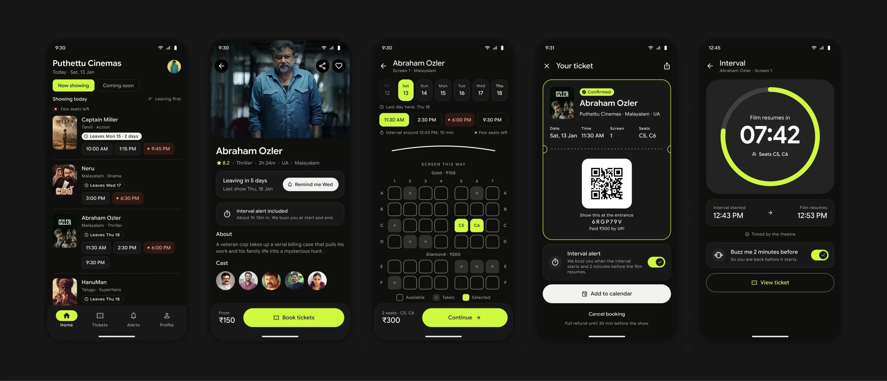
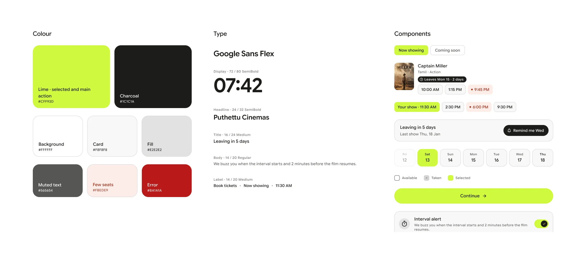
Motion
Every screen has motion, and each one has a job. Content arrives in the order you read it. The two signature features get the strongest moves, so your eye lands on them first.
Home.
Movie details.
Seats.
Payment.
Ticket.
Interval timer.
Alerts.
What I learned
This project taught me the full process end to end: research, personas, competitive analysis, wireframes, testing and iteration. The biggest lesson was how much user testing changes the design. All the significant improvements came from watching five people use it, not from my own judgment.
I designed this project as part of my Google UX certification in 2024.